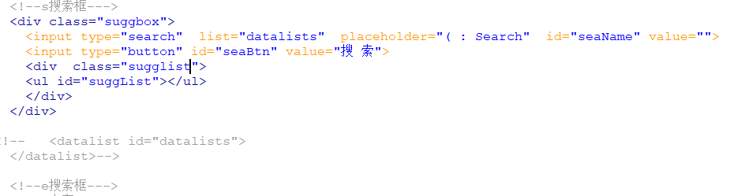

原文出处:本文由博客园博主晓觉不眠春提供。
原文连接:https://www.cnblogs.com/cgldl/p/10887882.html
原文连接:https://www.cnblogs.com/cgldl/p/10887882.html
首次使用博客,很多东西都在探索，第一篇文章也不知道发布点什么，就随便写写，是在word里面写的，也懒得排版，将就这用吧。
闲着没事找了酷狗的API写了个简单的静态网页，完成了搜索，展示，播放功能。就想着给搜索框写一个搜索推荐的下拉列表框，思路很明确，不写了画图
代码如下

样式表
可是在引用样式表的时候suggbox的样式怎么都运行不出来结果，还特意加了边框背景。但是其它的引用都正常，如图没有边框背景
调试查看也有引用suggest，可并没有发现属性

试着在div里面加了style
居然有效果，那么就怪了，其它同一个样式表其它样式能够引用成功，加style也能够成功，引用又没有错误，原因在哪里？找了好久终于发现罪魁祸首
原来是这条注释搞得鬼，只怪自己粗心，随手点了个注释，
没有仔细检查。最后去掉注释，一切正常了
稍作修改，简单的下拉列表就完成了